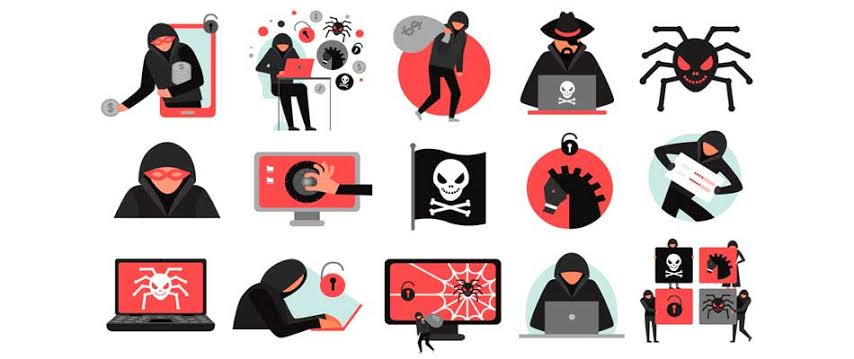

Malwares
O malware é um dos maiores perigos do mundo digital. Ele pode roubar dados, danificar sistemas e até assumir o controle do seu dispositivo. Entender o que é malware e como ele age é essencial para se manter seguro na internet.
O que é um Malware?
Malware é a abreviação de “malicious software” — ou software malicioso. É um programa criado para invadir, danificar ou espionar computadores, celulares e outros dispositivos sem o consentimento do usuário.
- Objetivo do malware: roubar dados, sequestrar arquivos, espionar atividades ou danificar sistemas.
- Como ele chega até você? Por meio de downloads, anexos de e-mail, links maliciosos, pendrives infectados ou até aplicativos falsos.
Pergunta 1:
O que melhor descreve um malware?
Principais Tipos de Malware
-
Vírus
Se anexa a arquivos e se espalha para outros dispositivos. Pode apagar dados, danificar arquivos ou tornar o sistema lento.
- Evite abrir arquivos desconhecidos, mesmo que venham de contatos confiáveis.
-
Worm (Verme)
Se espalha automaticamente em redes, sem precisar de interação do usuário. Pode sobrecarregar sistemas e causar lentidão.
- Mantenha o sistema e o antivírus atualizados para bloquear esse tipo de ameaça.
-
Trojan (Cavalo de Troia)
Finge ser um programa legítimo, mas abre portas para invasores acessarem seu dispositivo.
- Cuidado com programas piratas ou aplicativos desconhecidos.
-
Spyware
Espiona o que você faz no dispositivo e envia informações para criminosos, como senhas e dados bancários.
- Use ferramentas de segurança que detectem esse tipo de programa oculto.
-
Ransomware
Sequestra seus arquivos e exige pagamento (geralmente em criptomoedas) para liberar o acesso.
- Faça backup regularmente e desconfie de e-mails com anexos suspeitos.
Pergunta 2:
Qual tipo de malware exige resgate em troca do desbloqueio de arquivos?
Como Saber se Seu Dispositivo Está Infectado?
- Lentidão repentina ou travamentos constantes
- Programas que abrem sozinhos ou comportamentos estranhos
- Pop-ups e anúncios em excesso
- Arquivos desaparecidos ou criptografados
- Antivírus desativado sem explicação
Pergunta 3:
Qual destes é um sinal claro de que seu dispositivo pode estar infectado?
Como se Proteger de Malware?
- Use um antivírus confiável e mantenha-o atualizado
- Não clique em links suspeitos recebidos por e-mail, SMS ou redes sociais
- Baixe programas apenas de sites oficiais ou lojas confiáveis (Google Play, App Store, etc.)
- Atualize seu sistema operacional e aplicativos com frequência
- Evite usar pendrives ou HDs de origem desconhecida
- Desconfie de mensagens com anexos, mesmo de conhecidos
Pergunta 4:
Qual das opções abaixo é uma boa prática para se proteger de malware?
O Que Fazer se Seu Dispositivo For Infectado?
- Desconecte da internet – Isso evita que o malware envie dados ou se espalhe.
- Rode um antivírus completo – De preferência, em modo de segurança.
- Apague arquivos suspeitos ou restaure backups, se possível.
- Troque todas as suas senhas – Especialmente se dados pessoais foram comprometidos.
- Procure ajuda profissional se não conseguir remover a ameaça sozinho.
Procure ajuda profissional se não conseguir remover a ameaça sozinho.
Pergunta 5:
O que deve ser feito se você suspeitar que seu dispositivo foi infectado por malware?
Conclusão
O malware é uma ameaça real, mas com boas práticas de segurança, é possível se proteger. Desconfie sempre, mantenha seu dispositivo protegido e informe-se. Na internet, a prevenção é a sua melhor defesa.